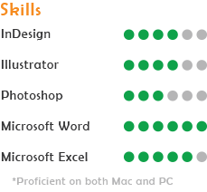

Experience
Art Vendor | Art in the Park | June 2014
Westminster, MD
- >Accepted into the show as a vendor
- >Sold three original pieces of art as well as prints
- >Got in touch with other artists before the show and made
contacts during
Tutor | Carroll Community College | Feb 2014- May 2014
Westminster MD
- >Tutored Math 091, 097, 099, and 129
- >Worked at drop-in math table once a week
- >Weekly appointments with multiple students.
Cashier | Carroll Drugs of Manchester | 2012- 2014
Manchester MD
- >Complete cash exchanges and making returns when necessary
- >Restock and design inventory to appeal to customers
- >Assist customers and answer questions about product
Education
Art+Design Major | 3.6 GPA | Dec. 2016 (anticpated)
Towson University
Towson, MD
General AA Degree | 3.9 GPA | Dec. 2013
Carroll Community College
Westminster, MD
High School Diploma | 3.2 GPA | June 2011
Manchester Valley High School
Manchester, MD
Accomplishments
VisArts Gallery | Rockville | 2014
- >Artwork was chosen for a young artist show
- >30 pieces accepted out of 60 applications
- >Attened the gallery opening to meet many of the other
artists
300+ hours of community service | 2004-2011
National Student Leadership Conference | 2009 |
Washington D.C.
Conference on Intelligence and National Security.
- >Visited CIA Headquarters, Pentagon, and Arlington
Cemetery
- >Met Chairman of the Joint Chiefs of Staff, Admiral
Michael Mullen.
- >Gained skills needed for leadership in school and career
including communication
and time-management